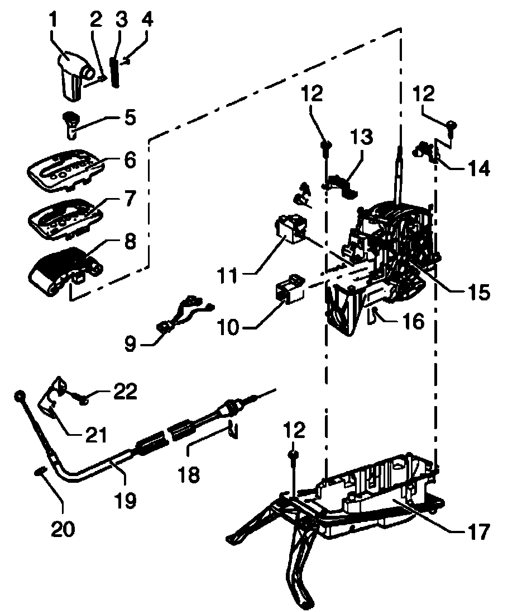

Overhaul
Selector mechanism, disassembling and assembling

1. Selector lever handle
^ Removing and installing. Refer to Selector lever handle, removing and installing.
2. Clip
3. Trim strip
4. Emblem
^ Self-adhesive
5. Sleeve
6. Shift cover
^ With selector indicator
7. Printed circuit
8. Frame
^ With cover strip
9. Wiring
^ With Tiptronic Switch F189
^ Removing and installing. Refer to Tiptronic switch F189, removing and installing. Tiptronic Switch F189, Removing and Installing
10. Shift lock solenoid N110
^ Removing and installing. Refer to Shift lock solenoid N110, removing and installing.
11. Selector lever park position solenoid N380
^ Removing and installing. Refer to Selector lever park position solenoid N380, releasing with no electrical power. Procedures
12. Bolt, 20 Nm
^ Qty. 4
13. Bracket
14. Bracket
15. Shift mechanism
^ With shift lock solenoid N110 and selector lever park position solenoid N380
^ Can be removed upward
16. Bolt
^ Adjusting
17. Mounting bracket/cover
^ Can only be removed downward
18. Circlip
^ Always replace
19. Selector lever cable
^ Is removed together with selector mechanism go to Item -15-
^ Adjusting, Adjusting
20. Circlip
^ Always replace
21. Support bracket
^ For selector lever cable on transmission
22. Bolt, 23 Nm
^ Self-locking
^ Always replace
^ The threaded holes in the transmission for the bolts must always be cleaned. (e. g. with a thread tap)